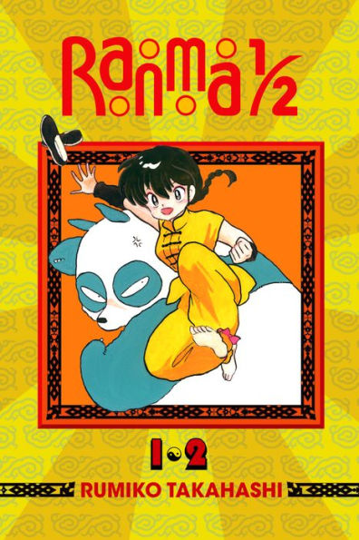
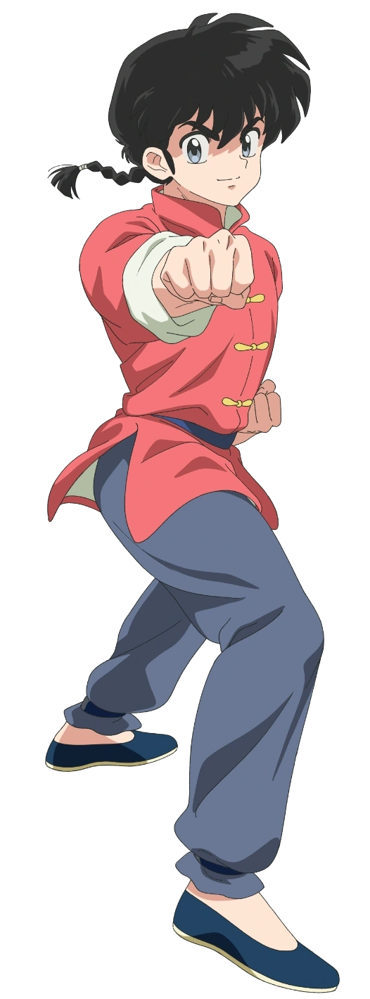
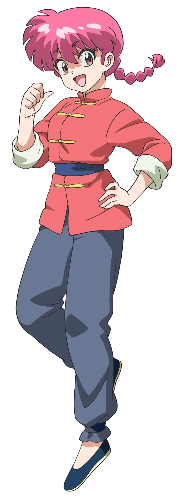
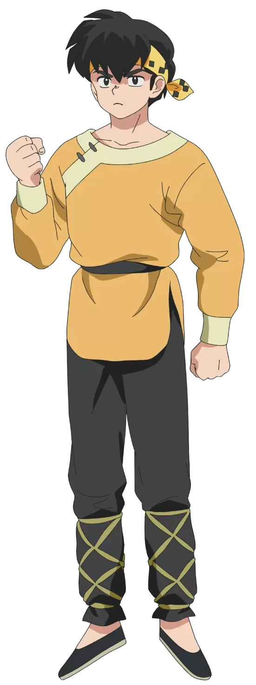

Perhaps you're an old geezer who watched the original anime as it came out.
Or perhaps
you're a new fan who just started with the modern anime last year.
Either way, welcome!
This is a safe heaven for all Ranma fans, no matter where you're from.
If you're someone who's just starting out, feel free to go down below for a little introduction
and a look at the main characters of the series. You may also choose to look at some images in the gallery
or even fill out our contact form!

Quick History of Ranma
Ranma ½ (らんま½, Ranma Nibun-no-Ichi, pronounced Ranma One-Half in English) is a Japanese manga series created by Rumiko Takahashi. It began publication in September 1987, appearing in Shōnen Sunday after the ending of Rumiko Takahashi's previous major work, Urusei Yatsura. From September 1987 until March 1996, Ranma ½ was published on a near weekly basis with the occasional colorized page to spruce up the usually black and white manga stories. After nearly a decade of storylines, the final chapter was published in Shōnen Sunday 1996, Volume 12, finalizing the manga with a total of 115 story arcs.
What's it all about?
Glad you asked! Basically, the story revolves around a 16-year-old boy named Ranma Saotome who was trained from early childhood in martial arts. As a result of an accident during a training journey in China, he is cursed to become a girl when splashed with cold water, but hot water will change him back into a boy. What ensues is a plethora of hilarious shenanigans that have to do with Ranma's unique condition, as well as the marriage that him and Akane Tendo of the Tendo Dojo have been forcefully put in. If you've seen even one episode of the series, you'll know exactly what I'm talking about. And if not....what are you waiting for!
Main Characters
Ranma Saotome (早乙女 乱馬, Saotome Ranma) is the sixteen year old heir to the Saotome Branch of Anything Goes Martial Arts, the only child of Genma Saotome and Nodoka Saotome, the self-acknowledged fiancé of Akane Tendo, and the reluctant fiancé of Shampoo, Ukyo Kuonji and numerous others. Ranma is known not only for his exceptional martial arts skills but also for his unpredictable personality, ranging from cocky and stubborn to surprisingly thoughtful. Due to a cursed spring during a training journey in China, he transforms into a girl whenever he is splashed with cold water, reverting to his male form with hot water—a predicament that leads to endless comedic chaos. Despite his frequent bickering with Akane, he often shows glimpses of genuine care and loyalty, especially when his friends or family are in danger.
Ranma Saotome (早乙女 乱馬, Saotome Ranma) is the sixteen year old heir to the Saotome Branch of Anything Goes Martial Arts, the only child of Genma Saotome and Nodoka Saotome, the self-acknowledged fiancé of Akane Tendo, and the reluctant fiancé of Shampoo, Ukyo Kuonji and numerous others. Ranma is known not only for his exceptional martial arts skills but also for his unpredictable personality, ranging from cocky and stubborn to surprisingly thoughtful. Due to a cursed spring during a training journey in China, he transforms into a girl whenever he is splashed with cold water, reverting to his male form with hot water—a predicament that leads to endless comedic chaos. Despite his frequent bickering with Akane, he often shows glimpses of genuine care and loyalty, especially when his friends or family are in danger.
Ryoga Hibiki (響 良牙, Hibiki Ryoga) is a sixteen-year-old martial artist known for his incredible strength, stubbornness, and notoriously terrible sense of direction. A former rival of Ranma, he harbors a deep grudge after a series of humiliating defeats, which fuels both his determination and comic misadventures. Like Ranma, Ryoga suffers from a curse: whenever he comes into contact with cold water, he shrinks into a small, piglet-like form, returning to normal with hot water—a curse that adds constant chaos to his already tumultuous life. Despite his gruff demeanor, Ryoga has a surprisingly sensitive side, especially when it comes to his unrequited love for Akane. His combination of raw power, comic misfortune, and underlying vulnerability makes him both a formidable opponent and a lovable character in the series.
Akane Tendo (天道 あかね, Tendo Akane) is a sixteen-year-old martial artist and the youngest daughter of the Tendo family, which runs a dojo specializing in Anything Goes Martial Arts. Fierce, independent, and quick-tempered, she balances her tough exterior with a strong sense of justice and loyalty toward her friends and family. Despite her frequent frustrations with Ranma’s antics, she cares deeply for him and often finds herself reluctantly drawn into his chaotic world. Known for her exceptional skill in martial arts, her determination and resilience often rival even the most seasoned fighters. Outside of combat, Akane struggles with typical teenage concerns and her complicated feelings for Ranma, creating a blend of humor, tension, and heartfelt moments that define her character.
.webp)